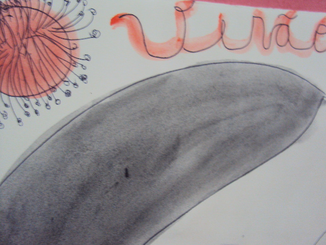
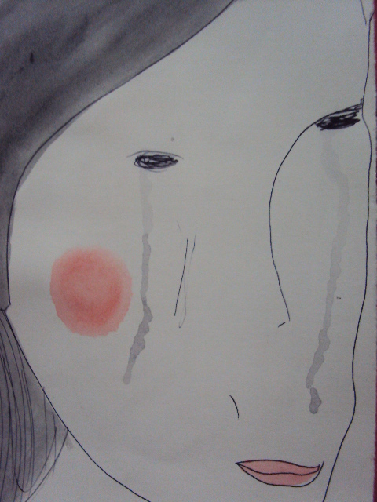
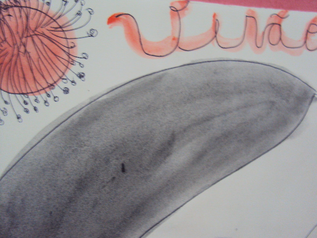
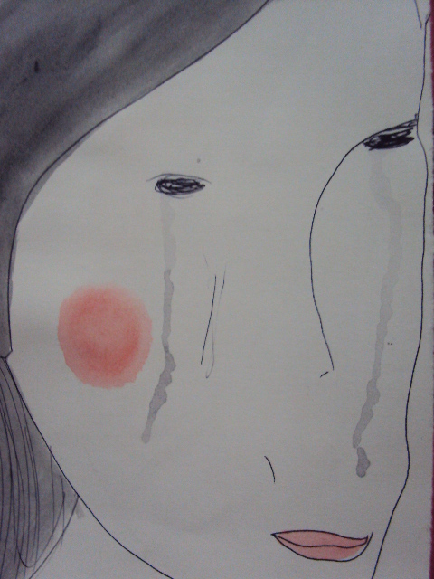

Esses são as bases-inspirações-rascunhos de Sília Moan para a musa de verão que chegará no MutGamb daqui a pouco:


Esses são as bases-inspirações-rascunhos de Sília Moan para a musa de verão que chegará no MutGamb daqui a pouco:


Bruno Vianna e Marcelo Braz enviaram links recortados na lista a cerca de ecologia de populações humanas e próximas naturezas:
A ciência tem demonstrado que a individualidade – a consciência de si próprio – não é uma característica única do ser humano. Isto levanta uma série de desafios.
Tom White - espanhol, português, inglês.
Any sufficiently advanced technology is indistinguishable from magic.
Any sufficiently advanced civilization is indistinguishable from nature.
Segundo o post de Rachel Armstrong, em Next Nature, não vemos sinais de outras civilizações porque elas já se adaptaram ao meio.
Marcelo Braz participou da ConSocial em Osasco (onde reside), compartilhou o relato de sua experiência na lista, e colocou questionamentos importantes:
Quais são as possibilidades dos vários conselhos municipais sobre políticas públicas?
Como é em sua cidade, ou melhor, no território que vives (pois o conceito de "cidade" já está trincado e caindo aos pedaços)?
Thiago Novaes compartilhou a iniciativa de um movimento descentralizado e apartidário em repúdio a rasa programação da Rede Globo. A ideia é realizar múltiplas ações (São Paulo, Belo Horizonte, Salvador) no dia 17 de Março, das 12h às 16hs, com o objetivo de desmistificar a emissora como fonte confiável de informação para a população.
A Rede Globo tem como função, manter as pessoas entretidas a todo o momento, utilizando uma programação vazia e deprimente, para assim desviar a população dos eventos políticos, econômicos e sociais, que impactam diretamente em nossa vida. Enquanto o Marketing é a alma do negócio, a mídia é a alma do sistema! Destrua a alma e destruirá o sistema por completo. Desde pequenos nós comemos lixo, comercial, industrial, mas agora chegou nossa vez, vamos cuspir de volta o lixo encima de vocês, somos os filhos da revolução!!!leia mais >>
Mutirão da Gambiarra foi idealizado pela MetaReciclagem

Apoio:


Assine Mutirão da Gambiarra por RSS